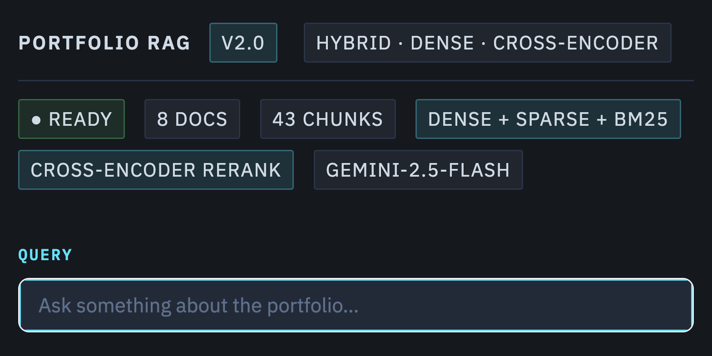

Portfolio LLM
Built an interactive LLM app that indexes my CV and projects, allowing fast retrieval of details about my projects and experiences.
Open app →MSc Data Science student at the University of Exeter. I specialise in ML, deep learning and LLMs for business impact.
Built an interactive LLM app that indexes my CV and projects, allowing fast retrieval of details about my projects and experiences.
Open app →
Built credit risk models on real-world data; explored distributions & multicollinearity; trained and compared Logistic Regression, Random Forest, and XGBoost.
Read report →
Study to identify key factors influencing diabetes diagnosis and evaluation of ML models for classification performance.
Read report →Built a web-based KPI dashboard during my internship at Ekimetrics. Semi-automated reporting pipeline — from raw data ingestion and cleaning to interactive Power BI dashboards — reducing manual effort and improving decision-making efficiency for commercial teams.
Not publicly accessibleConducted a critical analysis of machine learning applications in Type 1 diabetes, evaluating predictive models, diagnostic tools, and treatment innovations to assess their clinical impact and limitations
Read report →Evaluated various neural network architectures for sentiment analysis on financial news, comparing MLPs, LSTMs, and Transformer models to determine their effectiveness in capturing sentiment nuances in financial texts.
Read report →
Designed a complex Multi-Layer Perceptron architecture from scratch using NumPy, achieving comparable ~89% accuracy against a PyTorch implementation on the FashionMNIST dataset
GitHub Repository →Completed the 12-module certification covering Python, SQL, data visualization, machine learning, and applied data science. Verified by IBM via Coursera.
View certificate →Email is the fastest way to reach me. I’m open to freelance collaborations and full-time roles.